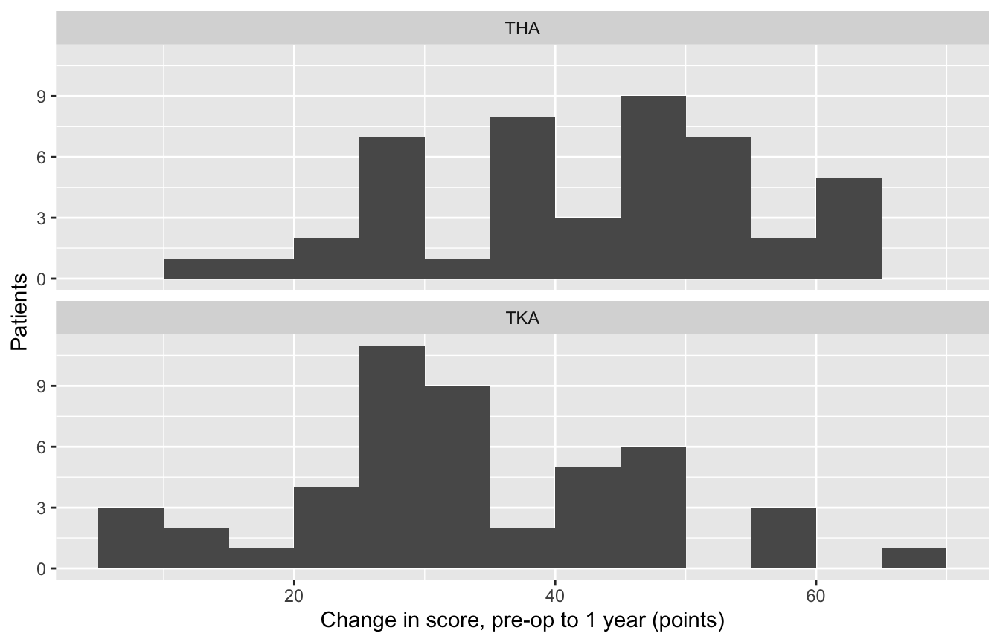
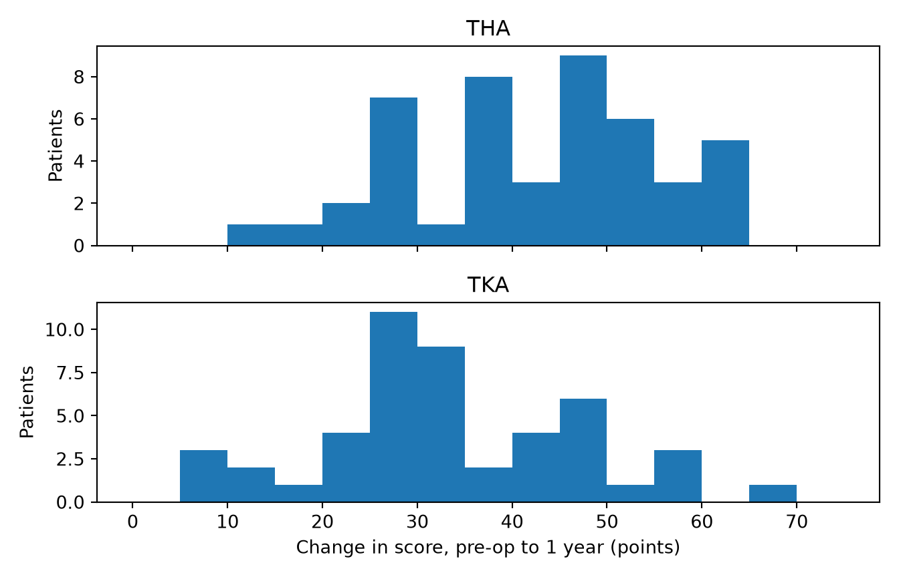
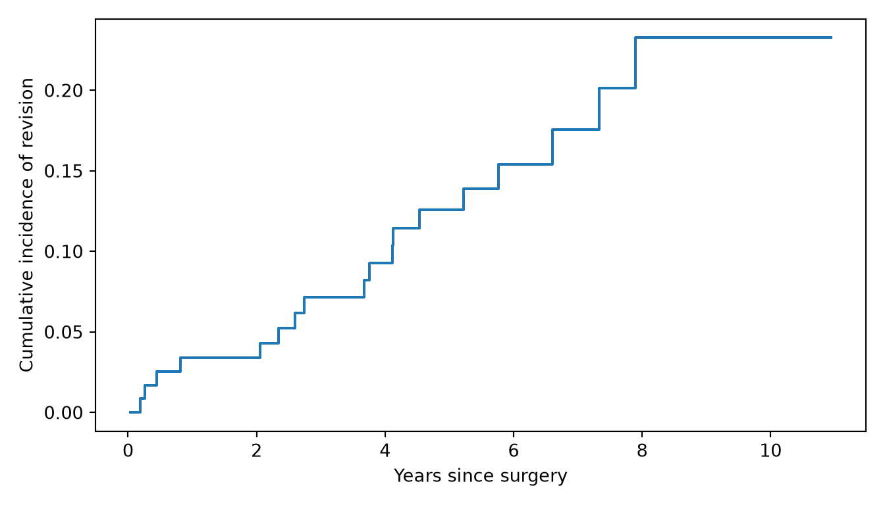
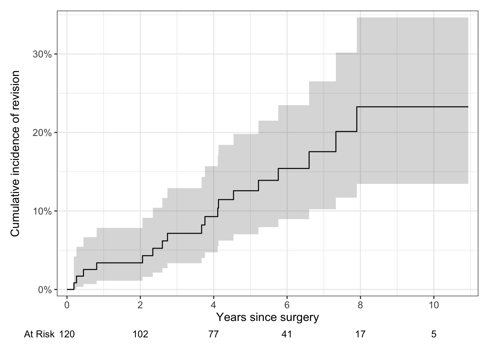

library(tidyverse)
library(readxl)
library(tidyxl)
library(gtsummary)
library(survival)
library(ggsurvfit)
path <- "data/messy_abstraction_workbook.xlsx"18 · Example study report
A complete mini-study, from the raw abstraction workbook to a manuscript’s Methods and Results, with a Word version to download.
This page puts the whole site together in one small study, from the messy abstraction workbook to the Methods and Results of a manuscript. Steps 1 to 7 do the work, in R and Python. Step 8 is the manuscript itself, and it’s also a Word document: MS Word, under “Other Formats” in the right margin. The Word file contains only the manuscript, built from the same code every time the site is rendered.
Note💡 How this page works
Run the code blocks in order, from the top: later blocks use the packages and data loaded in the first one. Each step links to the page that explains its method.
1 · The research question
Write the question down before you look at the outcome data, together with the primary outcome and the analysis that will answer it. Deciding these after seeing the results makes any p-value meaningless (page 15). For this study:
- Question: do patients improve as much in the first year after a total knee replacement (TKA) as after a total hip replacement (THA)?
- Primary outcome: the change in the joint-specific score from before surgery to 1 year: HOOS JR after THA, KOOS JR after TKA, each scored 0 to 100, higher is better.
- Primary analysis: the difference in mean change between THA and TKA, with its 95% CI, from Welch’s t test (page 6), if the changes look roughly symmetric within each group (page 3). Otherwise the Mann-Whitney test.
- Secondary outcome: revision of any component, as a cumulative incidence with death as a competing risk (page 13).
Warning⚠️ Watch out: two questionnaires
HOOS JR and KOOS JR are different questionnaires. Both run from 0 to 100, but a 10-point gain on one isn’t guaranteed to mean the same as a 10-point gain on the other. The comparison is still common in the literature, but say plainly in the Methods that it compares points on each joint’s own scale. A stronger design uses a score every patient completes, such as the VR-12 physical component score.
2 · Tidy the raw workbook
The data come from the abstraction workbook that page 1 tidies step by step: 60 cases from each site, with banner rows, merged headers, mixed dates, five spellings of “missing” and revisions marked only by a red fill. The code below is page 1’s five steps in one block; open it to see the code, and go back to page 1 for why each step is there.
The tidying code from page 1
# Step 1: read both tabs as text; the group header says pre-op first, then 1 year
read_site <- function(sheet) {
raw <- read_excel(path, sheet = sheet, skip = 3, col_types = "text", .name_repair = "minimal")
names(raw) <- str_trim(names(raw))
names(raw)[names(raw) == "Date"] <- c("prom_preop_date", "prom_1yr_date")
names(raw)[names(raw) == "Score"] <- c("prom_preop", "prom_1yr")
raw |>
janitor::clean_names() |>
mutate(site = sheet)
}
raw <- bind_rows(read_site("Site A"), read_site("Site B")) # stack the tabs by column name
# Steps 2 and 3: drop the totals rows, duplicates and identifiers; one way to say "missing"
missing_codes <- c("N/A", "unk", "-", "999")
step3 <- raw |>
filter(is.na(pt_name) | pt_name != "TOTAL") |>
distinct() |>
select(-pt_name, -mrn, -mua) |>
mutate(across(everything(), \(x) if_else(x %in% missing_codes, NA, x)))
# Step 4: revisions are marked only by a red fill on the Study ID cell
cells <- xlsx_cells(path)
fills <- xlsx_formats(path)$local$fill$patternFill$fgColor$rgb
revised_ids <- cells |>
filter(fills[local_format_id] %in% "FFFF9999") |>
pull(character) |>
str_trim() |>
unique()
# Step 5: give every column its real type
parse_messy_date <- function(x, day_first = TRUE) {
serial <- !is.na(x) & str_detect(x, "^\\d{5}$")
iso <- !is.na(x) & str_detect(x, "^\\d{4}-\\d{2}-\\d{2}$")
rest <- !is.na(x) & !serial & !iso
out <- as.Date(rep(NA, length(x)))
out[serial] <- janitor::excel_numeric_to_date(as.numeric(x[serial]))
out[iso] <- ymd(x[iso])
out[rest] <- if (day_first) dmy(x[rest], quiet = TRUE) else mdy(x[rest], quiet = TRUE)
out
}
tidy <- step3 |>
rename(procedure_text = procedure) |>
transmute(
case_id = str_trim(study_id),
site,
surgery_date = parse_messy_date(dos),
age = parse_number(age),
sex = case_when(str_detect(sex, regex("^f", ignore_case = TRUE)) ~ "Female",
str_detect(sex, regex("^m", ignore_case = TRUE)) ~ "Male"),
bmi = parse_number(bmi),
asa = as.integer(as.roman(str_remove(asa, "^ASA "))),
diabetes = as.integer(str_detect(comorbidities, regex("\\bDM\\b", ignore_case = TRUE))),
hypertension = as.integer(str_detect(comorbidities, regex("\\bHTN\\b", ignore_case = TRUE))),
sleep_apnea = as.integer(str_detect(comorbidities, regex("\\bOSA\\b", ignore_case = TRUE))),
procedure = case_when(str_detect(procedure_text, regex("TKA|knee", ignore_case = TRUE)) ~ "TKA",
str_detect(procedure_text, regex("THA|hip", ignore_case = TRUE)) ~ "THA"),
side = case_when(str_detect(procedure_text, "\\b(L|Left)\\b") ~ "L",
str_detect(procedure_text, "\\b(R|Right)\\b") ~ "R"),
los_days = parse_number(los),
revised = as.integer(case_id %in% revised_ids),
prom_preop_date = parse_messy_date(prom_preop_date),
prom_preop = parse_number(prom_preop),
prom_1yr_date = parse_messy_date(prom_1yr_date),
prom_1yr = parse_number(prom_1yr)
) |>
arrange(site, case_id)
dim(tidy)[1] 120 18import re
import numpy as np
import pandas as pd
import openpyxl
import matplotlib.pyplot as plt
import pingouin as pg
import statsmodels.formula.api as smf
from scipy import stats
from scipy.stats import norm
from tableone import TableOne
from lifelines import KaplanMeierFitter
from lifelines.utils import qth_survival_times
from statsmodels.duration.survfunc import CumIncidenceRight
path = "data/messy_abstraction_workbook.xlsx"The tidying code from page 1
# Step 1: read both tabs as text; pandas names the repeated headers "Date.1" and "Score.1"
def read_site(sheet):
raw = pd.read_excel(path, sheet_name=sheet, header=3, dtype=str)
names = [str(c).strip() for c in raw.columns]
pairs = {"Date": "prom_preop_date", "Score": "prom_preop",
"Date.1": "prom_1yr_date", "Score.1": "prom_1yr"}
names = [pairs.get(n, n) for n in names]
raw.columns = [re.sub(r"[^0-9a-z]+", "_", n.lower()).strip("_") for n in names]
return raw.assign(site=sheet)
raw = pd.concat([read_site("Site A"), read_site("Site B")], ignore_index=True) # stack by column name
# Steps 2 and 3: drop the totals rows, duplicates and identifiers; one way to say "missing"
step3 = (raw[raw["pt_name"] != "TOTAL"]
.drop_duplicates()
.drop(columns=["pt_name", "mrn", "mua"])
.replace(["N/A", "unk", "-", "999"], pd.NA))
# Step 4: revisions are marked only by a red fill on the Study ID cell
revised_ids = set()
for sheet in openpyxl.load_workbook(path).worksheets:
for row in sheet.iter_rows(min_row=5):
for cell in row:
if cell.fill.fgColor.rgb == "FFFF9999":
revised_ids.add(str(cell.value).strip())
# Step 5: give every column its real type
def number(text):
return pd.to_numeric(text.str.extract(r"(\d+\.?\d*)")[0])
def parse_messy_date(col, dayfirst=True):
iso = col.str.match(r"\d{4}-\d{2}-\d{2}", na=False)
swiss = col.notna() & ~iso
dates = pd.concat([pd.to_datetime(col[iso], format="ISO8601"),
pd.to_datetime(col[swiss], format="mixed", dayfirst=dayfirst)])
return dates.reindex(col.index)
asa_roman = {"I": "1", "II": "2", "III": "3", "IV": "4"}
procedure_text = step3["procedure"]
tidy = pd.DataFrame({
"case_id": step3["study_id"].str.strip(),
"site": step3["site"],
"surgery_date": parse_messy_date(step3["dos"]),
"age": number(step3["age"]),
"sex": step3["sex"].str[0].str.lower().map({"f": "Female", "m": "Male"}),
"bmi": number(step3["bmi"]),
"asa": pd.to_numeric(step3["asa"].str.replace("ASA ", "").replace(asa_roman)),
"diabetes": step3["comorbidities"].str.contains(r"\bDM\b", case=False).astype(int),
"hypertension": step3["comorbidities"].str.contains(r"\bHTN\b", case=False).astype(int),
"sleep_apnea": step3["comorbidities"].str.contains(r"\bOSA\b", case=False).astype(int),
"procedure": np.select([procedure_text.str.contains(r"TKA|knee", case=False),
procedure_text.str.contains(r"THA|hip", case=False)],
["TKA", "THA"], default=None),
"side": np.select([procedure_text.str.contains(r"\b(?:L|Left)\b"),
procedure_text.str.contains(r"\b(?:R|Right)\b")],
["L", "R"], default=None),
"los_days": number(step3["los"]),
"revised": step3["study_id"].str.strip().isin(revised_ids).astype(int),
"prom_preop_date": parse_messy_date(step3["prom_preop_date"]),
"prom_preop": number(step3["prom_preop"]),
"prom_1yr_date": parse_messy_date(step3["prom_1yr_date"]),
"prom_1yr": number(step3["prom_1yr"]),
}).sort_values(["site", "case_id"]).reset_index(drop=True)
print(tidy.shape)(120, 18)120 cases, 18 columns. The workbook has no follow-up: it records whether a hip or knee was revised, but not when, and not whether the patient died. Follow-up comes from the joint registry, linked by study ID. In the practice data, data/cohort.csv plays the registry. Take only the columns you need from it:
registry <- read_csv("data/cohort.csv", show_col_types = FALSE) |>
select(case_id, patient_id, followup_years, event_status, revised_registry = revised,
surgery_date_registry = surgery_date, procedure_registry = procedure) # these three, to check the link
study <- left_join(tidy, registry, by = "case_id") # keeps every workbook case
nrow(study)[1] 120count(study, procedure)# A tibble: 2 × 2
procedure n
<chr> <int>
1 THA 53
2 TKA 67registry = (pd.read_csv("data/cohort.csv", parse_dates=["surgery_date"])
[["case_id", "patient_id", "followup_years", "event_status", "revised", "surgery_date", "procedure"]]
.rename(columns={"revised": "revised_registry", "surgery_date": "surgery_date_registry",
"procedure": "procedure_registry"})) # these three, to check the link
study = tidy.merge(registry, on="case_id", how="left") # keeps every workbook case
print(len(study))120print(study["procedure"].value_counts().sort_index().to_string())procedure
THA 53
TKA 6753 THAs and 67 TKAs. A left join keeps every workbook case even if the registry has no record of it; the next step checks that none is missing.
3 · Check the tidying
Before any analysis, check the tidy data against what you know must be true (page 1). Write each check so that it stops the script when it fails: a check that only prints something is easy to scroll past.
# One row per case, and the 60 cases per site in the abstraction log
stopifnot(n_distinct(study$case_id) == nrow(study), all(count(study, site)$n == 60))
# Every value inside the range in the data dictionary (data/codebooks/abstraction_workbook_tidy.csv)
in_range <- function(x, low, high) all(is.na(x) | (x >= low & x <= high))
stopifnot(in_range(study$age, 40, 89), in_range(study$bmi, 18, 55), in_range(study$asa, 1, 4),
in_range(study$los_days, 0, 30), in_range(study$prom_preop, 0, 100), in_range(study$prom_1yr, 0, 100))
# PROM dates inside the protocol's windows: pre-op within 30 days before surgery, 1 year at 10 to 14 months
stopifnot(in_range(as.numeric(study$surgery_date - study$prom_preop_date), 0, 30),
in_range(as.numeric(study$prom_1yr_date - study$surgery_date), 300, 425))
# Every case found in the registry, and the workbook agrees with it on the surgery date,
# the procedure and the revisions (the red fills)
stopifnot(!anyNA(study$followup_years), all(study$surgery_date == study$surgery_date_registry),
all(study$procedure == study$procedure_registry), all(study$revised == study$revised_registry))
# One row per patient: nobody in this sample had both hips or both knees replaced
stopifnot(n_distinct(study$patient_id) == nrow(study))
# What's missing: count it now, report it later
n_missing <- colSums(is.na(study))
n_missing[n_missing > 0] bmi asa los_days prom_preop_date prom_preop
8 3 3 5 5
prom_1yr_date prom_1yr
22 22 # One row per case, and the 60 cases per site in the abstraction log
assert study["case_id"].is_unique and (study["site"].value_counts() == 60).all()
# Every value inside the range in the data dictionary (data/codebooks/abstraction_workbook_tidy.csv)
def in_range(values, low, high):
return bool(values.dropna().between(low, high).all())
assert in_range(study["age"], 40, 89) and in_range(study["bmi"], 18, 55) and in_range(study["asa"], 1, 4)
assert in_range(study["los_days"], 0, 30) and in_range(study["prom_preop"], 0, 100) and in_range(study["prom_1yr"], 0, 100)
# PROM dates inside the protocol's windows: pre-op within 30 days before surgery, 1 year at 10 to 14 months
assert in_range((study["surgery_date"] - study["prom_preop_date"]).dt.days, 0, 30)
assert in_range((study["prom_1yr_date"] - study["surgery_date"]).dt.days, 300, 425)
# Every case found in the registry, and the workbook agrees with it on the surgery date,
# the procedure and the revisions (the red fills)
assert study["followup_years"].notna().all() and (study["surgery_date"] == study["surgery_date_registry"]).all()
assert (study["procedure"] == study["procedure_registry"]).all() and (study["revised"] == study["revised_registry"]).all()
# One row per patient: nobody in this sample had both hips or both knees replaced
assert study["patient_id"].nunique() == len(study)
# What's missing: count it now, report it later
n_missing = study.isna().sum()
print(n_missing[n_missing > 0].to_string())bmi 8
asa 3
los_days 3
prom_preop_date 5
prom_preop 5
prom_1yr_date 22
prom_1yr 22Every check passed, so the code ran on. The workbook agrees with the registry on the surgery date, the procedure and the revisions for all 120 cases. Checking one source against another catches what neither can alone: a red fill the abstractor forgot, or a study ID linked to the wrong registry record. The registry also shows that the 120 cases are 120 different patients, so each row is one patient. The missing values are what the abstractor couldn’t find: 8 BMIs, 3 ASA classes, 3 lengths of stay, 5 pre-op scores and 22 one-year scores. The analysis has to say how it handles them.
4 · Table 1
Table 1 describes the patients before surgery, by procedure (page 2). In an observational study, show standardized mean differences (SMDs) instead of p-values (page 2): the question is how different the groups are, not whether the difference is “significant”. Keep a Missing row for every variable that has missing values.
study <- study |> mutate(asa = factor(asa)) # ASA class is a category
table_one <- study |>
select(procedure, age, sex, bmi, asa, diabetes, hypertension, sleep_apnea, site, prom_preop) |>
tbl_summary(
by = procedure,
statistic = all_continuous() ~ "{mean} ({sd})",
digits = all_continuous() ~ 1,
label = list(age ~ "Age, years", sex ~ "Sex", bmi ~ "BMI, kg/m²", asa ~ "ASA class",
diabetes ~ "Diabetes", hypertension ~ "Hypertension", sleep_apnea ~ "Sleep apnea",
site ~ "Site", prom_preop ~ "Pre-op score (HOOS JR or KOOS JR), points"),
missing_text = "Missing"
) |> # no Overall column: see below
add_difference(test = everything() ~ "smd") |>
modify_table_body(~ mutate(.x, estimate = abs(estimate))) |> # absolute SMDs (page 2)
modify_column_hide(columns = conf.low) |> # and not the SMDs' CIs
remove_abbreviation("CI = Confidence Interval") |>
modify_header(estimate = "**SMD**")
table_one| Characteristic | THA N = 531 |
TKA N = 671 |
SMD2 |
|---|---|---|---|
| Age, years | 64.4 (9.5) | 64.9 (8.0) | 0.05 |
| Sex | 0.47 | ||
| Female | 38 (72%) | 33 (49%) | |
| Male | 15 (28%) | 34 (51%) | |
| BMI, kg/m² | 29.6 (5.6) | 29.6 (5.0) | 0.00 |
| Missing | 4 | 4 | |
| ASA class | 0.29 | ||
| 1 | 7 (13%) | 5 (7.7%) | |
| 2 | 29 (56%) | 32 (49%) | |
| 3 | 16 (31%) | 28 (43%) | |
| Missing | 1 | 2 | |
| Diabetes | 3 (5.7%) | 5 (7.5%) | 0.07 |
| Hypertension | 30 (57%) | 34 (51%) | 0.12 |
| Sleep apnea | 7 (13%) | 17 (25%) | 0.31 |
| Site | 0.03 | ||
| Site A | 27 (51%) | 33 (49%) | |
| Site B | 26 (49%) | 34 (51%) | |
| Pre-op score (HOOS JR or KOOS JR), points | 48.1 (11.5) | 51.0 (11.8) | 0.26 |
| Missing | 0 | 5 | |
| 1 Mean (SD); n (%) | |||
| 2 Standardized Mean Difference | |||
study["asa"] = study["asa"].astype("Int64").astype("string") # a category; blanks stay missing
labels = {"age": "Age, years", "sex": "Sex", "bmi": "BMI, kg/m²", "asa": "ASA class",
"diabetes": "Diabetes", "hypertension": "Hypertension", "sleep_apnea": "Sleep apnea",
"site": "Site", "prom_preop": "Pre-op score (HOOS JR or KOOS JR), points"}
table_one = TableOne(study, columns=list(labels), groupby="procedure", overall=False, # no Overall column: see below
categorical=["sex", "asa", "diabetes", "hypertension", "sleep_apnea", "site"],
smd=True, missing=True, include_null=False, rename=labels)
print(table_one.tabulate(tablefmt="github"))| | | Missing | SMD (THA,TKA) | THA | TKA |
|------------------------------------------------------|--------|-----------|-----------------|-------------|-------------|
| n | | | | 53 | 67 |
| Age, years, mean (SD) | | 0 | 0.051 | 64.4 (9.5) | 64.9 (8.0) |
| Sex, n (%) | Female | 0 | 0.472 | 38 (71.7) | 33 (49.3) |
| | Male | | | 15 (28.3) | 34 (50.7) |
| BMI, kg/m², mean (SD) | | 8 | -0.004 | 29.6 (5.6) | 29.6 (5.0) |
| ASA class, n (%) | 1 | 3 | 0.287 | 7 (13.5) | 5 (7.7) |
| | 2 | | | 29 (55.8) | 32 (49.2) |
| | 3 | | | 16 (30.8) | 28 (43.1) |
| Diabetes, n (%) | 0 | 0 | 0.073 | 50 (94.3) | 62 (92.5) |
| | 1 | | | 3 (5.7) | 5 (7.5) |
| Hypertension, n (%) | 0 | 0 | 0.118 | 23 (43.4) | 33 (49.3) |
| | 1 | | | 30 (56.6) | 34 (50.7) |
| Sleep apnea, n (%) | 0 | 0 | 0.312 | 46 (86.8) | 50 (74.6) |
| | 1 | | | 7 (13.2) | 17 (25.4) |
| Site, n (%) | Site A | 0 | 0.034 | 27 (50.9) | 33 (49.3) |
| | Site B | | | 26 (49.1) | 34 (50.7) |
| Pre-op score (HOOS JR or KOOS JR), points, mean (SD) | | 5 | 0.255 | 48.1 (11.5) | 51.0 (11.8) |The groups differ most in sex: 72% of the THA patients were women against 49% of the TKA patients (SMD 0.47). Sleep apnea (0.31), ASA class (0.29) and the pre-op score (0.26) differ less; an SMD below 0.1 is usually read as a negligible difference. TKA patients started 2.9 points higher on average, which matters for an outcome measured as a change: a group that starts higher has less room to improve.
There’s no Overall column. For most rows it would be harmless, but for the pre-op score it would average HOOS JR and KOOS JR scores together, which is the comparison Step 1 warned about.
Tip🔀 R vs Python: SMDs
The SMDs agree to two decimals. R’s smd package divides the variances by n, tableone by n − 1, so continuous SMDs can differ in the third decimal (page 2). The hidden check allows for it. The two packages also subtract the groups in opposite orders, so their signs differ: the R table shows absolute values, as page 2 advises, and tableone’s keep their signs.
5 · Check the distributions
The primary outcome is the change from the pre-op score to the 1-year score, so it exists only for patients with both. Look at its shape within each group before choosing the test (page 3), and count the patients at the top of the scale.
analysed <- study |>
mutate(change = prom_1yr - prom_preop) |> # the primary outcome
filter(!is.na(change)) # patients with both scores
ggplot(analysed, aes(change)) +
geom_histogram(binwidth = 5, boundary = 0) +
facet_wrap(~ procedure, ncol = 1) +
labs(x = "Change in score, pre-op to 1 year (points)", y = "Patients")
change_summary <- analysed |>
group_by(procedure) |>
summarise(n = n(), mean = mean(change), sd = sd(change), at_ceiling = sum(prom_1yr == 100))
change_summary# A tibble: 2 × 5
procedure n mean sd at_ceiling
<chr> <int> <dbl> <dbl> <int>
1 THA 46 42.4 13.0 15
2 TKA 47 33.4 13.9 7analysed = study.assign(change=study["prom_1yr"] - study["prom_preop"]) # the primary outcome
analysed = analysed[analysed["change"].notna()] # patients with both scores
fig, axes = plt.subplots(2, 1, figsize=(7, 4.5), sharex=True)
for ax, (procedure, rows) in zip(axes, analysed.groupby("procedure")):
ax.hist(rows["change"], bins=range(0, 80, 5))
ax.set_title(procedure)
ax.set_ylabel("Patients")
axes[1].set_xlabel("Change in score, pre-op to 1 year (points)")
plt.tight_layout()
plt.show()
summary = analysed.groupby("procedure").agg(n=("change", "size"), mean=("change", "mean"),
sd=("change", "std"), at_ceiling=("prom_1yr", lambda s: int((s == 100).sum())))
print(summary.round(1).to_string()) n mean sd at_ceiling
procedure
THA 46 42.4 13.0 15
TKA 47 33.4 13.9 793 of the 120 patients have both scores: 46 THA and 47 TKA. Within each group the changes are roughly symmetric, with no long tail, and each group has more than 30 patients, so Welch’s t test fits (page 3).
One thing to note for the Discussion: 15 of the 46 THA patients (32.6%) scored the maximum, 100, at 1 year, against 7 of the 47 TKA patients (14.9%). A patient at the ceiling might have improved more if the scale allowed it, so the THA improvement, and the difference between the groups, may be underestimated. Exercise 1 checks the result with a rank-based test.
6 · The primary analysis
The pre-specified analysis: Welch’s t test on the change, with the mean difference, its 95% CI and Hedges’ g (page 6).
primary <- t.test(change ~ procedure, data = analysed) # Welch's t test is R's default
primary
Welch Two Sample t-test
data: change by procedure
t = 3.2351, df = 90.8, p-value = 0.001697
alternative hypothesis: true difference in means between group THA and group TKA is not equal to 0
95 percent confidence interval:
3.480506 14.554461
sample estimates:
mean in group THA mean in group TKA
42.42174 33.40426 primary_g <- effectsize::hedges_g(change ~ procedure, data = analysed)
primary_gHedges' g | 95% CI
------------------------
0.66 | [0.25, 1.08]
- Estimated using pooled SD.tha = analysed.loc[analysed["procedure"] == "THA", "change"]
tka = analysed.loc[analysed["procedure"] == "TKA", "change"]
primary = stats.ttest_ind(tha, tka, equal_var=False) # equal_var=False: Welch's t test
primary_ci = primary.confidence_interval()
print("t =", primary.statistic, " df =", primary.df, " p =", primary.pvalue)t = 3.2350964802445796 df = 90.79965900912056 p = 0.0016969642562152817print("difference =", tha.mean() - tka.mean(), " 95% CI", primary_ci.low, "to", primary_ci.high)difference = 9.017483811285857 95% CI 3.480506352222995 to 14.554461270348718g = pg.compute_effsize(tha, tka, eftype="hedges")
g_ci = pg.compute_esci(stat=g, nx=len(tha), ny=len(tka), eftype="hedges") # its 95% CI, to 2 decimals
print("Hedges' g =", g, " 95% CI", g_ci[0], "to", g_ci[1])Hedges' g = 0.6649248297548472 95% CI 0.24 to 1.09Reading it: - The difference: THA patients improved by 42.4 points on average and TKA patients by 33.4, a difference of 9.0 points (95% CI 3.5 to 14.6). R puts THA first because it comes first alphabetically; the Python code subtracts in the same order. - p = 0.002: if the procedures truly made no difference, a gap this large would be rare. - Hedges’ g = 0.66 (95% CI 0.25 to 1.08): the difference in standard deviations. It’s medium-to-large at the point estimate, but the CI runs from a small difference to a large one.
Tip🔀 R vs Python: Hedges’ g
Hedges’ g is Cohen’s d shrunk slightly to correct for small samples. effectsize uses the exact correction, pingouin a close approximation, so with 93 patients they differ in the sixth decimal. For the CI, pingouin’s compute_esci() uses an approximate formula and rounds to 2 decimals, so its CI, 0.24 to 1.09, is slightly wider than effectsize’s 0.25 to 1.08, which comes from the noncentral t distribution. Say which you used; the manuscript quotes R’s.
7 · Revision: a survival analysis
The secondary outcome is revision. First, how long were patients followed? Then, what proportion were revised over time? 18 patients died during follow-up without a revision, so death is a competing risk: the cumulative incidence gives the real proportion revised, where 1 − Kaplan-Meier would overstate it (page 13).
study <- study |>
mutate(status = factor(event_status, levels = c(0, 1, 2),
labels = c("censored", "revision", "death"))) # censored must come first
table(study$status)
censored revision death
84 18 18 # median follow-up and IQR: the reverse Kaplan-Meier method
reverse_km <- survfit(Surv(followup_years, event_status == 0) ~ 1, data = study)
follow_up <- quantile(reverse_km, probs = c(0.25, 0.5, 0.75), conf.int = FALSE)
follow_up 25 50 75
4.16 6.05 8.27 # the cumulative incidence of revision, with death as a competing risk
cif <- survfit2(Surv(followup_years, status) ~ 1, data = study, conf.type = "log-log")
revision_rows <- tidy_survfit(cif, times = c(2, 5)) |>
filter(outcome == "revision") |>
select(time, estimate, conf.low, conf.high)
revision_rows# A tibble: 2 × 4
time estimate conf.low conf.high
<dbl> <dbl> <dbl> <dbl>
1 2 0.0339 0.0111 0.0784
2 5 0.126 0.0703 0.198 revision_plot <- cif |>
ggcuminc(outcome = "revision") +
add_confidence_interval() +
add_risktable(risktable_stats = "n.risk") + # the numbers at risk, under the curve
scale_ggsurvfit(x_scales = list(breaks = seq(0, 10, by = 2))) +
labs(x = "Years since surgery", y = "Cumulative incidence of revision")
revision_plot
print(study["event_status"].value_counts().sort_index().to_string()) # 0 = censored, 1 = revision, 2 = deathevent_status
0 84
1 18
2 18# median follow-up and IQR: the reverse Kaplan-Meier method
reverse_km = KaplanMeierFitter().fit(study["followup_years"], event_observed=(study["event_status"] == 0))
follow_up = qth_survival_times([0.75, 0.5, 0.25], reverse_km.survival_function_).iloc[:, 0] # 25th, 50th, 75th percentiles
print(follow_up.to_string())0.75 4.16
0.50 6.05
0.25 8.27# the cumulative incidence of revision, with death as a competing risk
cif = CumIncidenceRight(study["followup_years"], study["event_status"])
revision = pd.DataFrame({"cif": cif.cinc[0], "se": cif.cinc_se[0]}, index=cif.times) # event type 1
z = norm.ppf(0.975)
revision_rows = revision.loc[[revision.index[revision.index <= years][-1] for years in [2, 5]]] # last step before each time
spread = np.exp(z * revision_rows["se"] / (revision_rows["cif"] * np.log(revision_rows["cif"]))) # the log-log CI, as in R
revision_rows = revision_rows.assign(time=[2, 5], low=revision_rows["cif"] ** (1 / spread),
high=revision_rows["cif"] ** spread)
print(revision_rows[["time", "cif", "low", "high"]].round(3).to_string(index=False)) time cif low high
2 0.034 0.011 0.078
5 0.126 0.070 0.198fig, ax = plt.subplots(figsize=(7, 4))
ax.step(revision.index, revision["cif"], where="post")
ax.set_xlabel("Years since surgery")
ax.set_ylabel("Cumulative incidence of revision")
plt.tight_layout()
plt.show()
The median follow-up was 6.05 years (IQR 4.16 to 8.27). 18 patients were revised and 18 died without a revision. The cumulative incidence of revision was 3.4% (95% CI 1.1% to 7.8%) at 2 years and 12.6% (95% CI 7.0% to 19.8%) at 5 years. With 18 revisions, the CIs are wide: this cohort can describe revision, not compare it between procedures. The numbers at risk under the R plot show how quickly the data thin out: 17 patients were still followed at 8 years and 5 at 10, so the end of the curve rests on very few patients. Publish them with the curve (page 13).
Tip🔀 R vs Python: the cumulative incidence
R’s survfit() estimates it whenever the status has three levels. statsmodels’ CumIncidenceRight() gives the same estimates and their standard errors, but no CI, so the Python code builds R’s log-log CI by hand (page 13).
8 · The manuscript
Everything from here to the exercises is the manuscript, and it’s what the Word version contains. Every number in it comes from the code above, and a hidden check stops the render if the text and the code ever disagree.
Note💡 What “done” looks like
- The question, outcome and analysis were written down before the analysis ran.
- The tidying is checked, and a failed check stops the script.
- Missing data are counted and reported, not dropped silently.
- Every estimate has a 95% CI, and the Methods name every test.
- The manuscript is rendered from the same file as the analysis. If the data change, Table 1 and Figure 1 update themselves, and the hidden check stops the render until every number in the text is updated by hand.
The manuscript stops at the Results. The Discussion is the author’s to write; for this study it would need to cover the ceiling effect at 1 year, the patients missing from the analysis, the two questionnaires, and whether a 9-point difference matters to patients.
Aim
To compare the improvement in joint-specific patient-reported scores from before surgery to 1 year after primary total hip arthroplasty (THA) and total knee arthroplasty (TKA), and to describe the cumulative incidence of revision.
Methods
Patients and data. We studied 120 primary THAs and TKAs performed at two sites (60 at each) between January 2015 and November 2024. Patients’ characteristics, the procedure and patient-reported scores were abstracted from the medical record into a standard sheet. Follow-up for revision and death came from the joint registry, linked by study ID.
Outcomes. The primary outcome was the change in the joint-specific score from before surgery to 1 year: the HOOS JR after THA and the KOOS JR after TKA, each scored from 0 to 100 (higher is better). Because the two are different instruments, the comparison is of points on each joint’s own scale. The secondary outcome was revision of any component.
Statistical analysis. Continuous variables are reported as mean (SD) and categorical variables as n (%); differences between procedures at baseline are described with standardized mean differences. The change in score was compared between procedures with Welch’s t test in patients with both scores, and summarized as the mean difference with its 95% CI and Hedges’ g. For revision, time was measured from the date of surgery to revision, death without revision (a competing event) or the end of registry follow-up (censored). Median follow-up was estimated with the reverse Kaplan-Meier method. The cumulative incidence of revision was estimated with the Aalen-Johansen method, treating death as a competing risk. Tests were two-sided. Analyses used R 4.6 and Python 3.13.
Results
Of the 120 patients, 53 (44.2%) had a THA and 67 (55.8%) a TKA (Table 1). Women made up 38 of 53 THA patients (71.7%) and 33 of 67 TKA patients (49.3%; SMD 0.47). The mean pre-op score was 48.1 points (SD 11.5) in THA patients and 51.0 points (SD 11.8) in TKA patients (SMD 0.26).
Both scores were available for 93 patients (77.5%): 46 of 53 after THA (86.8%) and 47 of 67 after TKA (70.1%). The mean change in score was 42.4 points (SD 13.0) after THA and 33.4 points (SD 13.9) after TKA (difference 9.0 points, 95% CI 3.5 to 14.6; Hedges’ g 0.66, 95% CI 0.25 to 1.08; p = 0.002). At 1 year, 15 of 46 THA patients (32.6%) and 7 of 47 TKA patients (14.9%) had the maximum score.
Over a median follow-up of 6.05 years (IQR 4.16 to 8.27), 18 patients had a revision and 18 died without one. The cumulative incidence of revision was 3.4% (95% CI 1.1% to 7.8%) at 2 years and 12.6% (95% CI 7.0% to 19.8%) at 5 years (Figure 1).
Characteristic | THA | TKA | SMD2 |
|---|---|---|---|
Age, years | 64.4 (9.5) | 64.9 (8.0) | 0.05 |
Sex | 0.47 | ||
Female | 38 (72%) | 33 (49%) | |
Male | 15 (28%) | 34 (51%) | |
BMI, kg/m² | 29.6 (5.6) | 29.6 (5.0) | 0.00 |
Missing | 4 | 4 | |
ASA class | 0.29 | ||
1 | 7 (13%) | 5 (7.7%) | |
2 | 29 (56%) | 32 (49%) | |
3 | 16 (31%) | 28 (43%) | |
Missing | 1 | 2 | |
Diabetes | 3 (5.7%) | 5 (7.5%) | 0.07 |
Hypertension | 30 (57%) | 34 (51%) | 0.12 |
Sleep apnea | 7 (13%) | 17 (25%) | 0.31 |
Site | 0.03 | ||
Site A | 27 (51%) | 33 (49%) | |
Site B | 26 (49%) | 34 (51%) | |
Pre-op score (HOOS JR or KOOS JR), points | 48.1 (11.5) | 51.0 (11.8) | 0.26 |
Missing | 0 | 5 | |
1Mean (SD); n (%) | |||
2Standardized Mean Difference | |||

Exercises
The solutions use the packages, data and objects made in the steps above, so run the page from the top first.
1. Fifteen THA patients scored the maximum at 1 year. Check the primary result with a test that uses ranks instead of means: the Mann-Whitney test and the Hodges-Lehmann difference (page 6). Does the conclusion change?
TipSolution
wilcox.test(change ~ procedure, data = analysed, exact = FALSE, conf.int = TRUE)
Wilcoxon rank sum test with continuity correction
data: change by procedure
W = 1461.5, p-value = 0.0035
alternative hypothesis: true location shift is not equal to 0
95 percent confidence interval:
3.600064 15.199914
sample estimates:
difference in location
9.499948 rank_check = stats.mannwhitneyu(tha, tka, alternative="two-sided", method="asymptotic", use_continuity=True)
print(rank_check.statistic, rank_check.pvalue)1461.5 0.0034996103353091236print(np.median(np.subtract.outer(tha.to_numpy(), tka.to_numpy()))) # the Hodges-Lehmann difference9.5Results: The Hodges-Lehmann difference in the change was 9.5 points (95% CI 3.6 to 15.2; p = 0.003).
The conclusion doesn’t change: 9.5 points is close to the 9.0 from the t test. Python gives the same estimate and p-value; its CI needs a bootstrap (page 6).
2. A reviewer writes: “TKA patients started with higher scores, so they had less room to improve. Adjust for the pre-op score.” Which analysis answers this, and what does it show?
TipSolution
Regress the 1-year score on the procedure and the pre-op score (page 12). The procedure’s coefficient is the difference at 1 year between patients who started with the same score.
adjusted <- lm(prom_1yr ~ prom_preop + procedure, data = analysed)
summary(adjusted)$coefficients Estimate Std. Error t value Pr(>|t|)
(Intercept) 76.2167482 5.0932211 14.964351 3.788075e-26
prom_preop 0.2983207 0.1003603 2.972496 3.789278e-03
procedureTKA -7.3642535 2.2703235 -3.243702 1.656337e-03confint(adjusted) 2.5 % 97.5 %
(Intercept) 66.09817558 86.3353208
prom_preop 0.09893741 0.4977041
procedureTKA -11.87464731 -2.8538596adjusted = smf.ols("prom_1yr ~ prom_preop + procedure", data=analysed).fit()
print(adjusted.params.round(3).to_string())Intercept 76.217
procedure[T.TKA] -7.364
prom_preop 0.298print(adjusted.conf_int().round(3).to_string()) 0 1
Intercept 66.098 86.335
procedure[T.TKA] -11.875 -2.854
prom_preop 0.099 0.498print(adjusted.pvalues.round(3).to_string())Intercept 0.000
procedure[T.TKA] 0.002
prom_preop 0.004Results: Adjusted for the pre-op score, the difference in the 1-year score between TKA and THA was −7.4 points (95% CI −11.9 to −2.9; p = 0.002).
The difference shrinks a little from the unadjusted 9.0 points but doesn’t go away, so the higher starting point explains only part of it.
3. 27 patients have no change score, so the primary analysis leaves them out. Were they left out more often after one procedure, and which score was missing? Test it and write the Results sentence.
TipSolution
no_change_score <- is.na(study$prom_1yr - study$prom_preop)
table(study$procedure, no_change_score) no_change_score
FALSE TRUE
THA 46 7
TKA 47 20fisher.test(table(study$procedure, no_change_score))$p.value[1] 0.04638888# which score was missing?
study |>
group_by(procedure) |>
summarise(no_preop = sum(is.na(prom_preop)), no_1yr = sum(is.na(prom_1yr)))# A tibble: 2 × 3
procedure no_preop no_1yr
<chr> <int> <int>
1 THA 0 7
2 TKA 5 15fisher.test(table(study$procedure, is.na(study$prom_1yr)))$p.value # the 1-year score alone[1] 0.2393494no_change_score = (study["prom_1yr"] - study["prom_preop"]).isna().rename("no_change_score")
missing_table = pd.crosstab(study["procedure"], no_change_score)
print(missing_table.to_string())no_change_score False True
procedure
THA 46 7
TKA 47 20print(stats.fisher_exact(missing_table).pvalue)0.046388878013810156# which score was missing?
print(study[["prom_preop", "prom_1yr"]].isna().groupby(study["procedure"]).sum().to_string()) prom_preop prom_1yr
procedure
THA 0 7
TKA 5 15print(stats.fisher_exact(pd.crosstab(study["procedure"], study["prom_1yr"].isna())).pvalue) # the 1-year score alone0.23934944030992605Results: The change score was missing for 7 of 53 THA patients (13.2%) and 20 of 67 TKA patients (29.9%; Fisher’s exact test p = 0.046): all 7 THA patients and 15 TKA patients had no 1-year score, and the other 5 TKA patients had no pre-op score. The 1-year score alone was missing for 7 THA patients (13.2%) and 15 TKA patients (22.4%; p = 0.239).
If the patients left out fared differently from those analysed, the comparison is biased; the Discussion should say so.